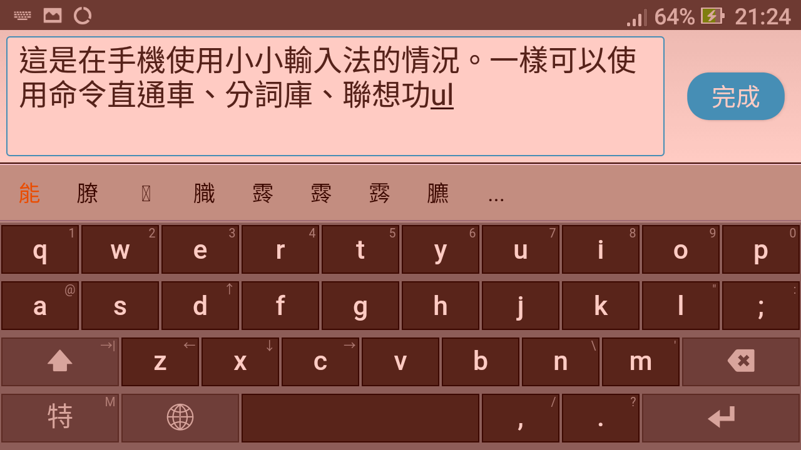

肆、Android版說明
一、簡介
本軟體包裝的Android版並不包含主程式，只有碼表與設置檔。在裝好主程式後，自行將碼表與設置檔複製到指定的位置。
以下僅對本軟體包裝的使用做說明。必要時可再參考這篇〈android版本使用說明〉。
二、安裝
自行前往小小輸入法平台網站下載Android版apk包裝檔來安裝。正式版或測試版皆可，記得要找較新的版本。
apk中只有程式與一種輸入法碼表：永碼，及用戶設置檔yong.ini。後二者會被裝到Android裝置的sdcard/yong目錄中。若要使用自己的輸入法碼表，要自行把碼表與設置檔複製到該目錄中，把它們換掉。裝好後先檢查一下sdcard/yong有無出現，若沒有，試試先啟用此輸入法，先用它隨便打幾個字，然後關閉，見目錄出現後，再做之後的動作。
以下說明如何從Windows版臺灣包中取得必要的檔案，換掉Android裝置sdcard/yong目錄中的檔案：
-
先在Android中下載apk並安裝好。
sdcard/yong目錄會有一目錄與一檔案：
- mb/
- yong.ini
-
換上設置檔與碼表：
-
在有安裝Windows版臺灣包的電腦中，從安裝目錄中，取得二項：
- tw/
- .yong/yong.ini
用這個.yong/yong.ini覆蓋上述Android版的yong.ini。
複製tw/到sdcard/yong目錄。mb/可以刪除掉。
-
或者可以取得本人另行為Android調整與打包的現成壓縮檔（即本Android包）。其中的檔案目錄結構：
- yong/tw/
- yong/yong.ini
若直接解壓縮到sdcard，檔案即就定位。
或先在別處解開，再自行複製/yong/下的東西過去。
-
三、使用提醒
以下的提醒是針對在Android環境使用小小輸入法平台（系統中顯示的文字是yong，故以下用此做簡稱）與本Android包所寫的。
安裝完成後記得到系統的“設置”>>“語言與鍵盤”中確認一下有啟用yong輸入法。你也許有另裝了其它輸入法，調整一下預設的輸入法到yong。
若有硬體實體鍵盤，軟鍵盤也許無法出現，若有這現象試著關閉實體鍵盤看看。
執行畫面：

除了畫面與選單大為不同，在Windows版上多數的輸入法與功能，像命令直通車、分詞庫、聯想，在Android也能用，但有幾點要注意：
- 注意一下軟鍵盤上的鍵，不會有注音符號、倉頡碼、大易碼……，只有英文字母。即不管切換何種輸入法，軟鍵盤上只會有英文字母，但在按鍵後，仍會出現所用輸入法的符號或字根代碼字。
- 軟鍵盤上有些是兩個符號共用一鍵，要上方的符號時，要長按，像q與1，點一下是q，若長按則是1。拆碼有用到數字鍵的，像大易、注音、漢音拼音要注意到這點。
- 軟鍵盤上的符號不若電腦鍵盤多，所以碼表中若有用到軟鍵盤所缺的符號，不得不調整（後述），若缺太多的，像大易可能就沒法正常使用了。
若上述幾點，讓你覺得不便，那麼可以改用另一個在Android平台上也做的相當不錯的輸入法：LIME HD。或者所購買的手機也許已有預裝手寫辨識或其他種輸入法軟體。
四、Android包所做的調整
基於上述原因，從Windows包取得的東西，為了能在Android較平順使用，做了點調整：
- yong.ini設置檔的調整：預設輸入法碼表改為無暇覓。主要原因是“特無”在電腦上輸入標點符號時，直接用電腦鍵盤上的符號即可，但Andoid的軟鍵盤缺了幾個符號，反而不便。